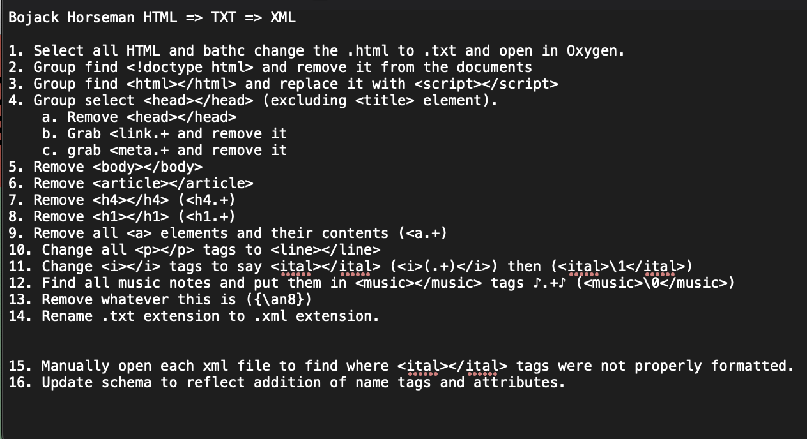

Project of Bojack Horseman
Scrapping, XML, and Regexing with Milo
There were four major parts to getting the Bojack Horseman scripts ready for data visualization. The first of which was finding the scripts. This was where we ran into our first of several issues: Netflix, the creator of the show, keeps their scripts under lock and key. It took much internet crawling to find transcripts, written by fans, of the show's text.
Second, we had to build a scrapper to gather all the textual data from the sites. We took a piece of code from our professor, Dr. Beshero-Bondar, and adapted it to our project so it would turn every web page from the provided site and download them into local .html files on my PC. From there the process of converting the files from .html to .txt to .xml began.
The first step was batch converting the .html into .txt by changing the extension on every file to .txt instead of .html. After that began the tedious process of Regexing. Below you can see the step file of the changes made to the file to achieve the result of our xml.
Once the documents were completely Regexed, they were ready to move onto the next step of the project: Visualization.
Limitations
The project did not come without its limitations. Though we were able to find the transcripts for the project, they are not official scripts. Netflix keeps their intellectual property locked up tight. It is nearly impossible to find any behind-the-scenes material. Due to this, whoever is speaking at any given point is not noted in the transcripts. There are also several spelling errors, music that is not surrounded in music tags as they were not noted in the transcripts, and odd punctuation that upsets the python code in the following section.